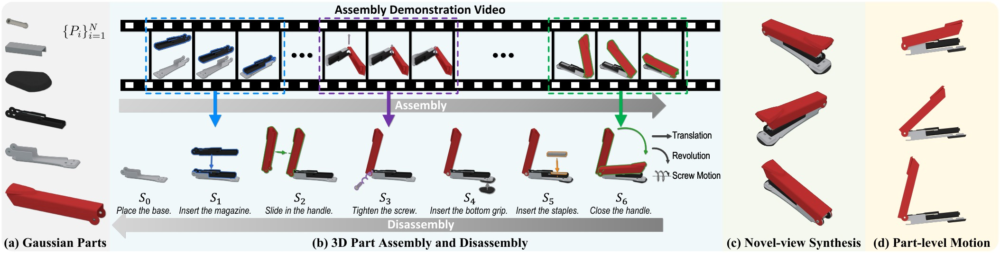
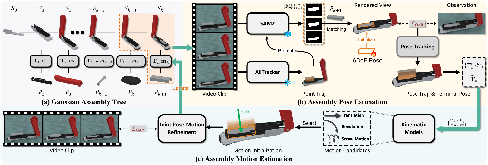

3D part assembly aims to arrange and connect individual components into functional objects by determining their spatial configurations and assembly relationships. However, existing methods primarily focus on geometric reasoning and assembly feasibility. They often rely on predefined CAD models or point clouds and do not directly target high-fidelity 3D assembly reconstruction for immersive visualization and interactive applications.
In this paper, we propose AssemblyGS, the first framework for reconstructing high-fidelity 3D part assemblies from assembly demonstration videos using 3D Gaussian Splatting. Specifically, we introduce a Gaussian Assembly Tree (GAT) that unifies part-level Gaussian representations, relative assembly poses, and motion parameters within a hierarchical structure. For each assembly step, we estimate the relative pose between the moving and reference units through occlusion-aware pose tracking, followed by parameterized motion estimation and joint refinement of the assembled pose and motion under a kinematic model. Finally, we integrate the recovered assembly poses and motions to complete the GAT, with its root representing the complete assembled object.
Experiments on synthetic and real-world data show that AssemblyGS achieves high-quality 3D reconstruction and accurate recovery of assembly poses and motions, enabling 3D part assembly and disassembly.

Tap a figure to view it at full size.
Figure 1. AssemblyGS overview. Given Gaussian parts reconstructed from multi-view images and an assembly demonstration video, AssemblyGS progressively recovers assembly poses and motions to build a complete 3D object. The reconstruction supports assembly and disassembly, novel-view synthesis, and part-level motion.

Figure 2. Overview of AssemblyGS. (a) A Gaussian Assembly Tree (GAT) unifies part-level Gaussian representations, relative assembly poses, and motion parameters, with its root representing the complete assembled object. (b) Assembly pose estimation identifies the moving part using AllTracker and SAM2, then estimates its initial 6-DoF pose trajectory and final assembled pose through part matching and occlusion-aware tracking. (c) Assembly motion estimation selects a translation, revolute or screw motion from the recovered trajectory and jointly refines the assembled pose and motion. These estimates complete the tree for 3D assembly and disassembly.
Figure 3. The Assembly-20 benchmark, each object shown assembled at its ground-truth poses. Twenty assemblies from the Fusion 360 Gallery Assembly Dataset span mechanical, industrial, and everyday objects. Each comes with Gaussian representations of its individual parts, RGB-D assembly demonstration videos captured from a fixed camera, and ground-truth assembled poses and motion parameters. The benchmark contains 132 standard assembly operations (104 translations, 25 screw motions, and 3 revolute motions), plus 3 additional translational interactions after assembly. Gallery operation counts include these additional interactions. 3D marks objects you can take apart in the interactive demo.
Interactive disassembly. Each part is represented by Gaussian splats reconstructed from calibrated multi-view images. Parts are removed in reverse demonstration order along the motions AssemblyGS recovered. Drag to orbit, scroll to zoom, and drag the slider to take the assembly apart. Rendered in the browser with Spark.
Input · key frames
Reconstruction · orbiting camera
Real-world demonstrations. An earbud case, an event camera, a remote control, and a toy train. Individual parts are reconstructed from calibrated multi-view images, and assembly demonstrations are recorded with a fixed Intel RealSense D435i. Depth maps are estimated from infrared stereo pairs using FoundationStereo and aligned with the RGB images; camera poses are calibrated with a ChArUco board. Left: key frames of each assembly stage. Right: the reconstructed parts following the recovered motions, viewed from an orbiting camera.
Swipe left or right to see all metrics.
| Method | Assembly Pose | Assembly Motion | Reconstruction Quality | |||||||
|---|---|---|---|---|---|---|---|---|---|---|
| ADD-S↓ | PA↑ | SR↑ | Type Acc.↑ | Axis Ang.↓ | Axis Pos.↓ | Motion Err.↓ | PSNR↑ | SSIM↑ | LPIPS↓ | |
| RPF | 3.247 | 57.65 | 20 | – | – | – | – | – | – | – |
| AssemblyDyno | 11.166 | 20.51 | 5 | 77.27 | – | – | 20.853 / 3.331 | – | – | – |
| AssemblyGS (Ours) + FoundationPose | 6.987 | 88.90 | 50 | 97.04 | 6.100 | 2.030 | 17.847 / 1.435 | 28.13 | 0.9701 | 0.03408 |
| AssemblyGS (Ours) | 0.812 | 97.04 | 90 | 99.26 | 0.197 | 0.760 | 1.841 / 0.172 | 30.07 | 0.9774 | 0.02724 |
Table 1. Quantitative comparison on the synthetic Assembly-20 benchmark. We evaluate assembly pose accuracy, assembly motion accuracy, and reconstruction quality. ADD-S reports pose error in millimetres; PA is the percentage of correctly assembled parts (ADD-S below 5% of the part diameter), and SR is the percentage of fully correct assemblies. Type Acc. measures motion type accuracy; Axis Ang. is the direction error in degrees, and Axis Pos. is the rotational-axis position error as a percentage of the part diameter. Motion Err. reports rotation error (degrees) / translation error (centimetres). PSNR, SSIM and LPIPS measure novel-view reconstruction quality. Bold values indicate the best performance; ↑ means higher is better, ↓ means lower is better, and – indicates an unavailable metric.
Figure 4. Visual comparison on Assembly-20. The leftmost column shows the individual Gaussian parts. RPF and AssemblyDyno produce point-cloud assemblies, while the AssemblyGS variant using FoundationPose and full AssemblyGS are rendered with 3D Gaussian Splatting, alongside their corresponding ground truth. The numbers at the bottom right of each result indicate correctly assembled parts out of the total.
Figure 5. 3D part assembly reconstruction. Real-world examples (top two rows) and synthetic examples (bottom two rows) show the input demonstration frames, estimated part poses and motions, and intermediate reconstructions. Green arrows indicate the recovered assembly motions; the rightmost column shows novel views of each fully assembled object.
@misc{assemblygs,
title = {Reconstructing High-Fidelity 3D Part Assemblies via Gaussian Splatting},
author = {Wenhao Li and Zixuan Chen and Jianhuang Lai and Xiaohua Xie},
note = {Manuscript}
}